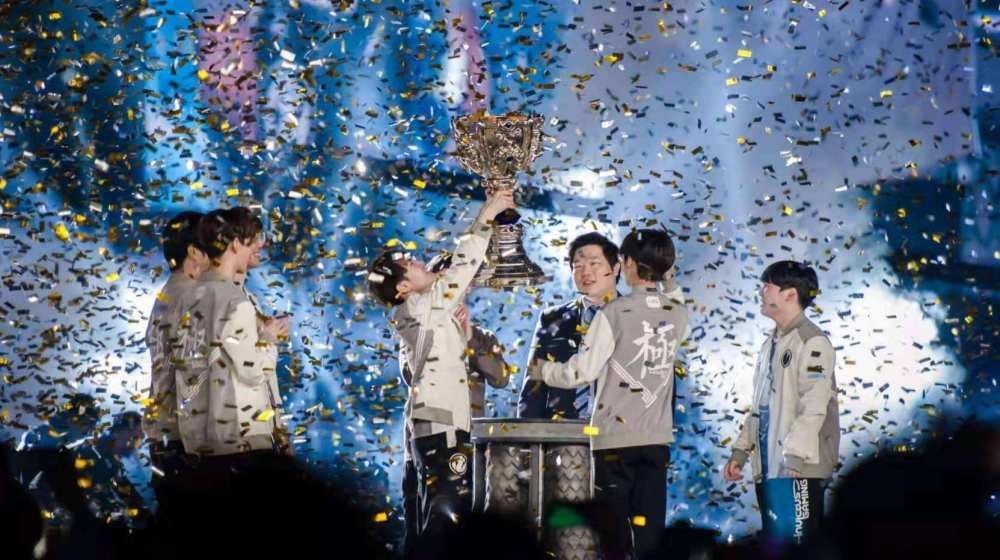
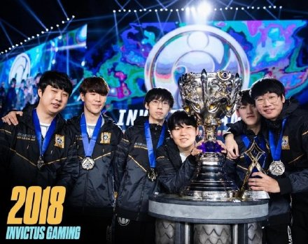

S8在韩国举行，主题曲为《Rise》。 在这一年，LPL赛区的RNG统治了一整年， 他们渴望为中国夺得第一个S赛冠军。 然而，被我们寄予厚望的RNG倒在了八进四的道路上。 当我们觉得夺冠无望时，另一只LPL战队IG站了出来。 他们以强势的打法，干翻了韩国一号种子KT。 一路过关斩将，闯入决赛。 在决赛中，以一个干净利落的3：0带走了FNC。 为中国带来了首冠。这一天，整个电竞圈沸腾了。 宿舍中大喊的“ig牛逼”，满屏的我们是冠军。 终于，这支敢打敢拼的IG登峰造极。 翻过了这座山，让世界听到了我们的故事!
 